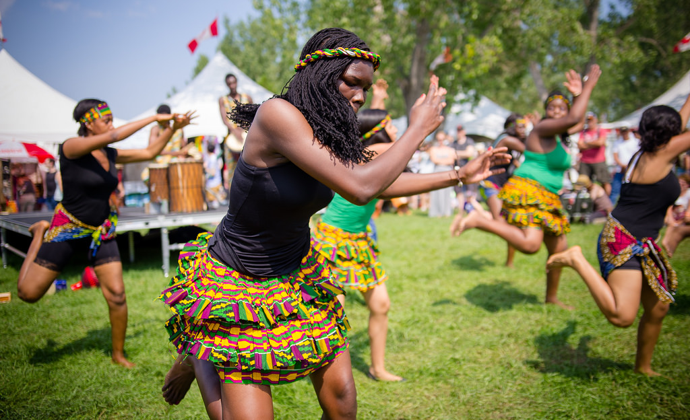
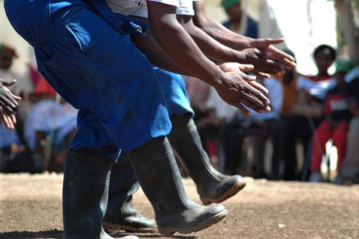

Les Nouveaux Cours Offerts en 2014
Danse africaine
 Différentes danses traditionnelles provenant de la Côte d'Ivoire et de l'Afrique de l'Ouest y sont regroupées. Ce sont des danses énergisantes et expressives qui permettent de travailler la coordination des mouvements en sollicitant/utilisant le corps en entier.
Gumboot
 Danse dynamique à percussion provenant des mineurs d'Afrique du Sud. Elle se pratique avec des bottes de pluie sur lesquelles on tape pour créer différents rythmes.
Matériel spécial: bottes en caoutchouc
Voici une vidéo sur le Gumboot. Aussi disponible sur YouTube !